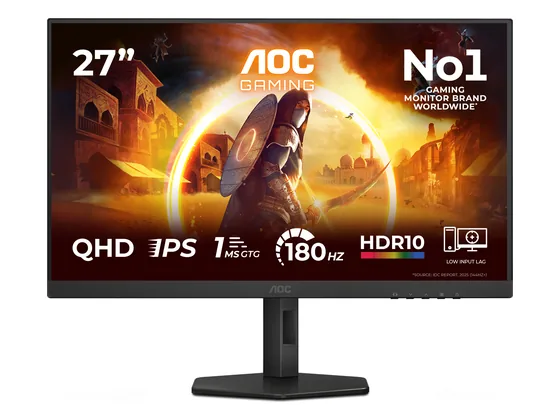
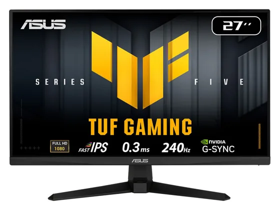
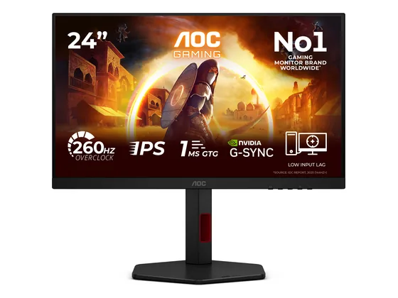
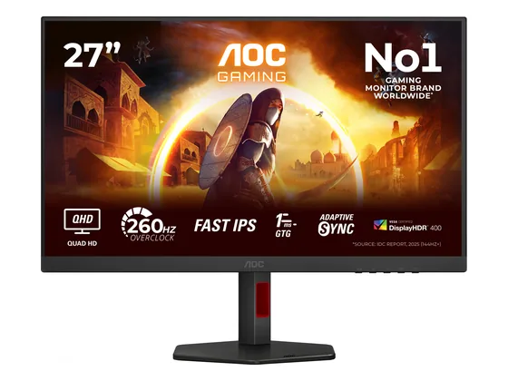

AOC Gaming Q27G4X : avis, tests et prix
Le verdict en une phrase. La bonne affaire du 27 pouces : QHD, 180 Hz, couleurs justes et pied réglable pour bien moins de 200 €. Peu de ports, HDR décoratif.
Notre choix dans le top 10 Écrans PC petit prix.

Pour qui ?
Vous voulez un 27" QHD fluide pour jouer et travailler, au meilleur prix.
Vous avez besoin d'un hub USB ou d'un port USB-C.
Le consensus de la presse
Sur 5 notes, 3 atteignent ou dépassent 8/10. La plus haute : 9,0/10 (GadgetGear) ; la plus basse : 7,0/10 (Game-eXperience). Ces notes portent sur la gamme : configurations ou générations proches de celle vendue aujourd'hui.
Où l'acheter
La configuration peut différer d'un marchand à l'autre : vérifiez la fiche avant d'acheter. Seuls les liens Amazon sont affiliés à ce jour ; les autres sont de simples liens directs. Aucun n'influence les notes ni le classement.
Tous les tests recensés
Chaque ligne renvoie vers le test d'origine. Les notes sont converties sur 10 ; « test » signale un article sans note chiffrée. Notre méthode.
Les alternatives pour le même usage
Tout le top 10 →
Asus TUF Gaming VG279QM5ALe successeur du VG279QM, référence du 27 pouces Full HD rapide : 240 Hz et Fast IPS pour un peu plus de 120 €. N° 3 · Le 24" e-sport
AOC Gaming 24G4ZRUn 24 pouces Full HD à 260 Hz avec pied réglable en hauteur, pour moins de 100 € : le format préféré des joueurs compétitifs. N° 4 · Le plus rapide
AOC Gaming Q27G4ZRUn QHD à 260 Hz bien calibré et lumineux, avec pied entièrement réglable : de la fluidité de compétition pour moins de 200 €.Questions fréquentes
Que pense la presse de l'écran AOC Gaming Q27G4X ?
La note presse moyenne est de 7,8/10, calculée sur 5 notes (de 7,0 à 9,0/10). La bonne affaire du 27 pouces : QHD, 180 Hz, couleurs justes et pied réglable pour bien moins de 200 €. Peu de ports, HDR décoratif.
Quels sont les points faibles relevés par les tests ?
Peu de connectique, pas d'USB ; HDR peu lumineux.
À qui s'adresse le modèle AOC Gaming Q27G4X ?
Vous voulez un 27" QHD fluide pour jouer et travailler, au meilleur prix. À éviter si : vous avez besoin d'un hub USB ou d'un port USB-C.
Où l'acheter, et à quel prix ?
Comptez environ 130 € (prix indicatif constaté en octobre 2026). Nous l'avons trouvé en vente chez Amazon. Les prix changent vite et la configuration peut différer d'un marchand à l'autre : seul le prix affiché par le marchand fait foi.